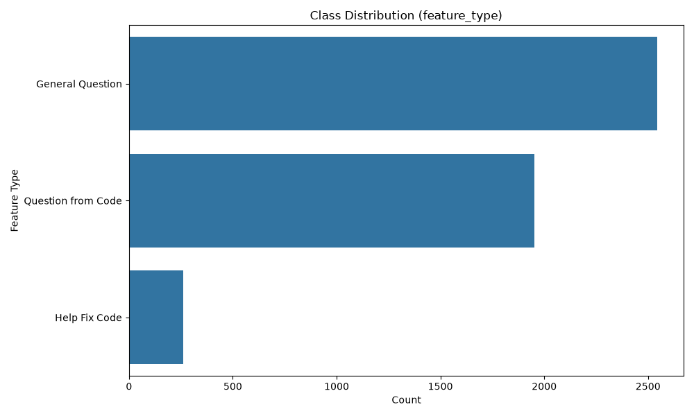
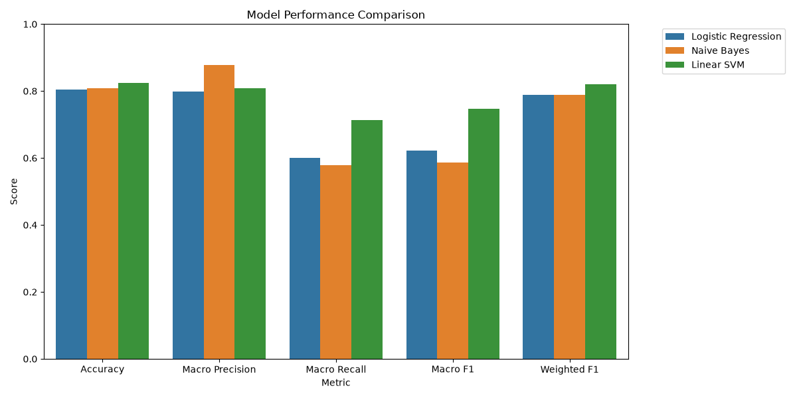
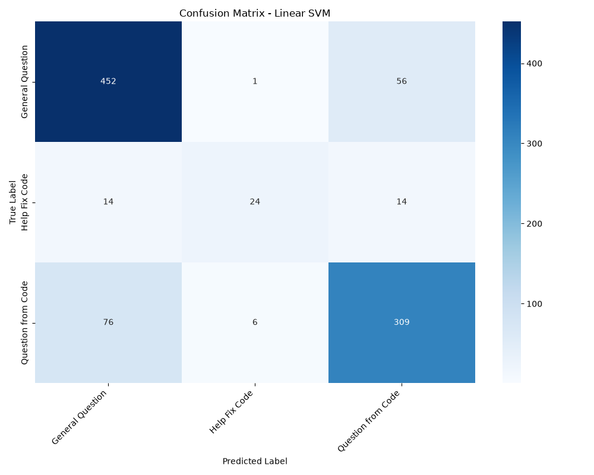

Introduction
- What is CodeAid?
A smart web-based IDE and AI assistant based on the "CodeAid" research paper. - The Core Problem:
Regular AI models directly write full code. Students copy-paste and fail to learn concepts. - The Solution:
An AI that acts as a teacher—providing logic and clues, but refusing to write direct code.

The Original Paper
- Concept: Restricting LLMs from spoon-feeding code to students.
- Approach: Collected data on how students interact with AI for coding tasks.
- Identified Gaps in the Paper:
- Lacked multi-language execution directly in the browser.
- Did not utilize Machine Learning to automatically analyze and classify student intents based on their queries.
Our Contributions
How We Solved the Gaps
IDE Enhancement
- Built a fully functional, dark-themed web-based IDE.
- Added real-time execution for C, C++, and Python.
- Integrated Firebase Firestore to track student progress and log activities.
- Introduced Seamless Error-to-AI Integration (One-Click Error Explainer).
ML Integration
- Analyzed a vast dataset of student interactions.
- Trained Machine Learning models to automatically predict student intents from their questions.
Working Mechanism
- User selects a language & writes code.
- User selects an AI feature.
- Frontend sends code + question to Backend.
- Backend injects strict Educational Prompt & calls LLM.
- Response streams back in Markdown format.
- User clicks "Run Code" → Backend compiles and executes.

Dataset Description
- Dataset: Log of student queries (~142,000 records).
- Features: User ID, Timestamp, Input Question, Input Code.
- Target Label: Feature Type (Intent mapping).
- Goal: Train models to predict the intent using NLP.

Fig: Class Distribution of Student Intents
Machine Learning Results
- We trained 3 different algorithms on the NLP data.
- Linear SVM outperformed others.
- Naive Bayes had great Precision but lower Recall.
- Logistic Regression provided a balanced baseline.

Evaluation Metrics
| Algorithm | Accuracy | Precision | Recall | F1 Score |
|---|---|---|---|---|
| Linear SVM | 82.45% | 80.78% | 71.32% | 74.70% |
| Naive Bayes | 80.88% | 87.88% | 57.94% | 58.58% |
| Logistic Regression | 80.46% | 79.86% | 60.02% | 62.19% |
Linear SVM: Confusion Matrix

Confusion Matrix demonstrating strong diagonal predictions for the best performing model.
Limitations
- API Dependency: IDE heavily relies on external LLM APIs (like OpenAI) which incur costs.
- Prompt Injection: Smart users might trick the AI into giving direct code by overriding prompts.
- Execution Security: Running user code currently uses basic processes without strict Docker container isolation.
Future Work
Infrastructure
- Implement Docker containers for 100% safe code execution.
- Integrate local Open-Source models (like Llama 3) to completely remove API costs.
Features
- Expand support for Java, JavaScript, and Database Queries (SQL).
- Develop a Teacher Dashboard to track student progress and common mistakes.